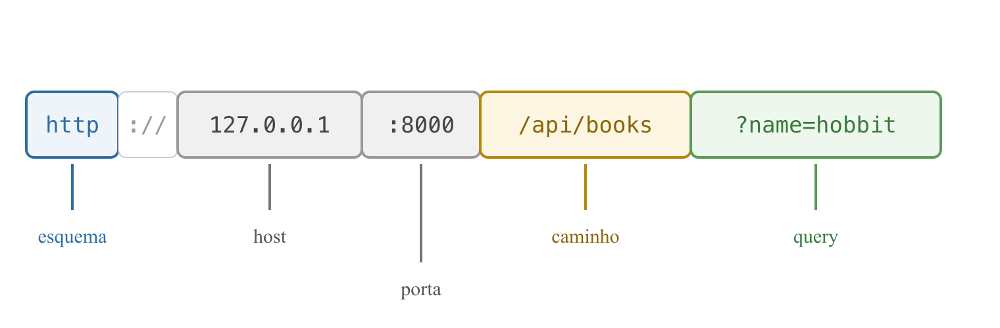
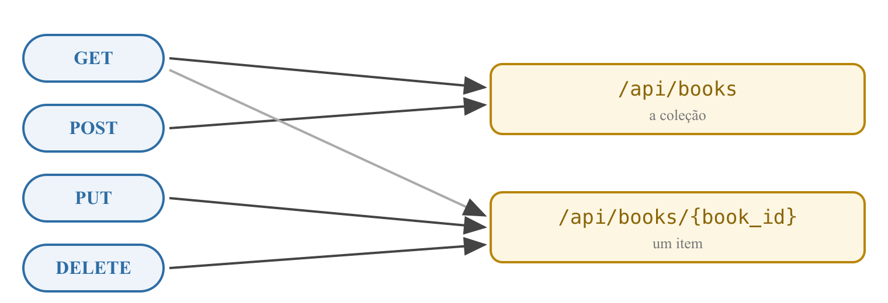

Programação Avançada — Aula 03
Universidade Unirios
O recurso Books reside em uma lista em memória, com quatro rotas: GET /health, GET /api/books (filtro ?name=), GET /api/books/{book_id} e POST /api/books recebendo um dicionário sem validação.
Duas limitações deixadas em aberto deliberadamente:
name → 500: o cliente enviou dados errados, mas a falha ocorreu no servidor;len(books) + 1 — frágil diante de remoções."Uma URI é uma sequência compacta de caracteres que identifica um recurso abstrato ou físico."
RFC 3986 — Uniform Resource Identifier (URI): Generic Syntax, IETF, 2005

A mesma estrutura descreve qualquer endereço da web — inclusive o do nosso servidor.
RFC 3986 — Uniform Resource Identifier (URI): Generic Syntax, IETF, 2005
http, https (HTTP sobre conexão cifrada), mailto...;:8000 aparece porque não é a padrão;chave=valor da aula 02: ajustam o pedido;#: uma parte dentro do documento.RFC 3986 — Uniform Resource Identifier (URI): Generic Syntax, IETF, 2005
https://developer.mozilla.org/pt-BR/docs/Web/HTTP#recursos
└─ uso local:
o navegador não envia
#recursos não aparece na requisição;RFC 3986 — Uniform Resource Identifier (URI): Generic Syntax, IETF, 2005
:8000 aparece;FIELDING, R. Architectural Styles and the Design of Network-based Software Architectures, 2000
REST é um estilo arquitetural para sistemas de hipermídia distribuídos — um conjunto de restrições que, respeitadas, conferem ao sistema as propriedades da web.
FIELDING, R. Architectural Styles and the Design of Network-based Software Architectures, 2000
FIELDING, R., 2000 · RICHARDSON, L.; RUBY, S. RESTful Web Services, 2007

Poucos verbos padronizados sobre muitos substantivos — em vez de uma operação nomeada para cada caso (/getBooks, /criarLivro).
FIELDING, R., 2000
| CRUD | Verbo | Na coleção | No item | Status |
|---|---|---|---|---|
| Create | POST | cria um livro | — | 201 |
| Read | GET | lista | um livro | 200 |
| Update | PUT | — | substitui os dados | 200 |
| Delete | DELETE | — | remove | 204 |
RFC 9110 — HTTP Semantics, IETF, 2022 · RICHARDSON, L.; RUBY, S. RESTful Web Services, 2007
GET /api/books, nunca GET /api/getBooks;/books); item = coleção + id (/books/3);book_id;Discussão: por que GET /api/books/delete/3 seria uma má escolha?
Decisão registrada no ADR-0002 do projeto · RICHARDSON; RUBY, 2007
FIELDING, R. Architectural Styles and the Design of Network-based Software Architectures, 2000
| Verbo + URI | O que faz | Quando |
|---|---|---|
GET /api/books | lista os Books | aula 02 |
GET /api/books/{book_id} | um Book pelo id | aula 02 |
POST /api/books | cria um Book | aula 02 |
PUT /api/books/{book_id} | atualiza um Book | hoje |
DELETE /api/books/{book_id} | remove um Book | hoje |
POST /signup | cadastra um User | aula 04 |
GET /users/{user_id}/books | os Books de um User | aula 05 |
POST /books/{book_id}/progress | registra um Reading Update | aula 06 |
Elaborado em sala a partir dos substantivos do glossário do projeto: User, Book, Reading Update.
/signup foge da regra do substantivo — é uma ação. Exceção pragmática consagrada: cadastro e login são operações, não recursos;/users/{user_id}/books expressa hierarquia: a URI documenta a relação entre os recursos;user_id — decisão deliberada (ADR-0001): a falha será o ponto de partida da aula de autenticação.No Swagger: POST /api/books com corpo {}
HTTP/1.1 500 Internal Server Error
book["name"] → KeyError);
from fastapi import FastAPI, HTTPException
from pydantic import BaseModel
class BookCreate(BaseModel):
name: str
BookCreate exige um name do tipo string.Documentação oficial do Pydantic — docs.pydantic.dev · Documentação oficial do FastAPI — fastapi.tiangolo.com
@app.post("/api/books", status_code=201)
def create_book(book: BookCreate):
new_book = {"id": len(books) + 1, "name": book.name}
books.append(new_book)
return new_book
book: BookCreate — o FastAPI valida o corpo antes de chamar a função;book.name: atributo de objeto, não chave de dicionário;book_id: int — agora aplicado ao corpo da requisição.
{
"detail": [
{
"type": "missing",
"loc": ["body", "name"],
"msg": "Field required"
}
]
}
body → name) e o quê (Field required);{"name": 123} também é barrado: tipo errado é rejeitado na borda.
class Book(BaseModel):
id: int
name: str
@app.get("/api/books", response_model=list[Book])
@app.get("/api/books/{book_id}", response_model=Book)
@app.post("/api/books", response_model=Book, status_code=201)
id; o que entra não — o id é atribuído pelo servidor;response_model valida a saída e documenta o formato exato no /docs (decisão do ADR-0002);Documentação oficial do FastAPI — fastapi.tiangolo.com
@app.put("/api/books/{book_id}", response_model=Book)
def update_book(book_id: int, book: BookCreate):
for stored_book in books:
if stored_book["id"] == book_id:
stored_book["name"] = book.name
return stored_book
raise HTTPException(status_code=404, detail="Book not found")
BookCreate: atualizar exige os mesmos campos que criar;
@app.delete("/api/books/{book_id}", status_code=204)
def delete_book(book_id: int):
for book in books:
if book["id"] == book_id:
books.remove(book)
return
raise HTTPException(status_code=404, detail="Book not found")
return vazio, sem response_model;
DELETE /api/books/1 → 204 (restam ids 2 e 3; len = 2)
POST {"name": "Duna"} → id = len(books) + 1 = 3 ... já existe
GET /api/books → dois livros com id 3
GET /api/books/3 → devolve o primeiro que encontrar
next_book_id = 4
@app.post("/api/books", response_model=Book, status_code=201)
def create_book(book: BookCreate):
global next_book_id
new_book = {"id": next_book_id, "name": book.name}
next_book_id += 1
books.append(new_book)
return new_book
global: a função precisa reatribuir a variável do módulo (sem ele, nasceria uma variável local);
| Método | Rota | O que faz |
| ------ | ---- | --------- |
| GET | /health | Verifica se a API está no ar |
| GET | /api/books | Lista os livros; query param opcional name |
| GET | /api/books/{book_id} | Um livro pelo id (404 se não existir) |
| POST | /api/books | Cria um livro; corpo validado pelo BookCreate |
| PUT | /api/books/{book_id} | Atualiza o nome de um livro (404 se não existir) |
| DELETE | /api/books/{book_id} | Remove um livro; 204 sem corpo (404 se não existir) |
A tabela de endpoints do README.md reflete o estado atual do projeto.
author (string, opcional, padrão "") aos dois schemas;create_book e update_book para gravar o novo campo;author vazio (preenchido pelo response_model, a partir do valor padrão do schema).author — a aula 04 parte do código sem ele.response_model na saída — o 500 tornou-se 422;O CRUD está completo, mas os dados são voláteis: a cada reinício do servidor, tudo se perde.